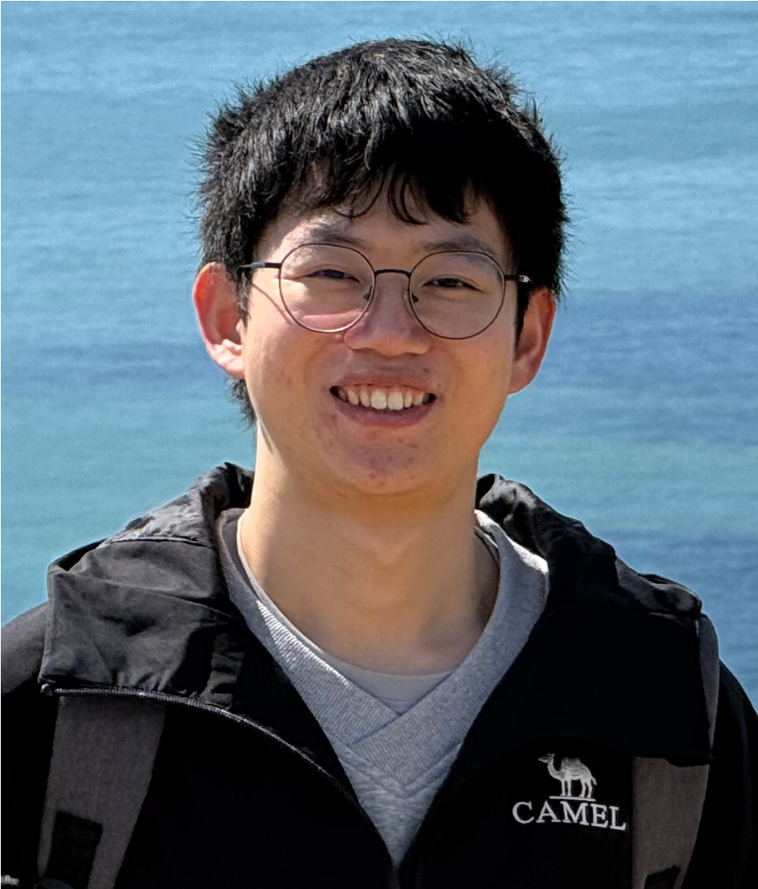
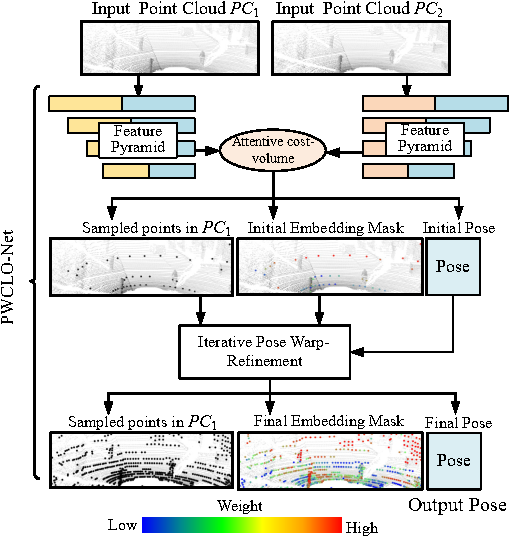
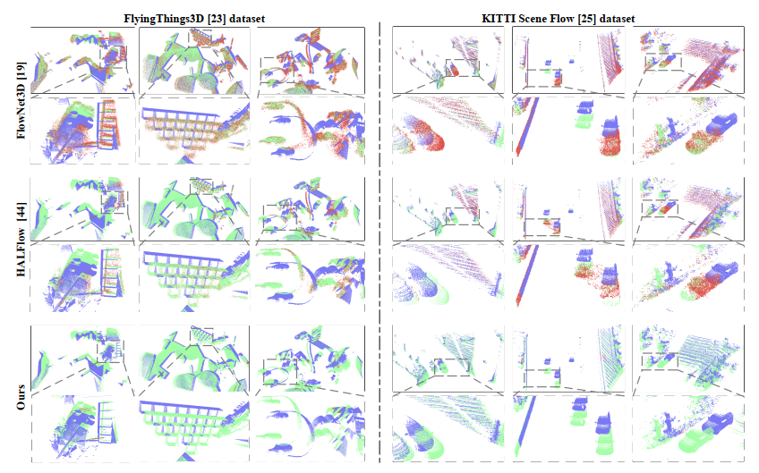
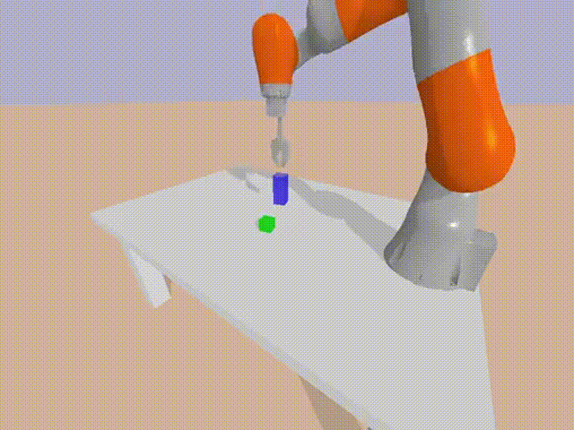

Group Lead
Guangming Wang
Assistant Professor at the Cambridge-Ireland International Centre and Research Associate at the University of Cambridge; robot vision, LiDAR odometry, 3D scene flow, robust estimation, and manipulation learning.
Shanghai Jiao Tong University
The Shanghai research root of PIRLab: robot perception, LiDAR odometry, 3D scene flow, robust estimation, and robot manipulation learning.
Purpose
The SJTU group reflects PIRLab's long-running research foundation in the Intelligent Robotics and Machine Vision community at Shanghai Jiao Tong University.
The group emphasizes strong student mentoring, open-source robot vision systems, and publication-quality research across computer vision, robotics, AI, and intelligent transportation.
Efficient 3D deep odometry, point-cloud representation learning, and robust localization pipelines.
Large-scale 3D motion estimation, auto-labelling, uncertainty-aware learning, and dynamic perception.
Reinforcement learning, base controllers, real-to-sim-to-real transfer, and physically grounded policies.
Group Members
Group Lead
Assistant Professor at the Cambridge-Ireland International Centre and Research Associate at the University of Cambridge; robot vision, LiDAR odometry, 3D scene flow, robust estimation, and manipulation learning.

PhD Student
Research interest: semantic SLAM. Co-supervised with Prof. Hesheng Wang.

PhD Student
Research interest: 3D reconstruction. Co-supervised with Prof. Zhe Liu.

PhD Student
Research interest: mobile manipulation. Co-supervised with Prof. Hesheng Wang.

PhD Student
Research interest: computer vision and deep learning for robot manipulation. Co-supervised with Prof. Hesheng Wang.
Advisory Board

Advisor
Tang Jun Yuan Chair Professor at Shanghai Jiao Tong University; intelligent robots, embodied AI, autonomous vehicles, and machine vision.

Advisor
Tenure-track associate professor at SJTU; large-scale robotic systems, resilient navigation, and robot control.
Former Members
PhD student at UC Berkeley.
PhD student at the University of Cambridge.
Master student at Georgia Tech.
Postgraduate at UCLA.
Postgraduate at Columbia University.
Postgraduate at TUM.
Postgraduate at UCSD.
PhD student at CMU.
PhD student at HKU.
Representative work



Mentoring
Formerly mentored students have continued to leading universities and research labs including UC Berkeley, Princeton, HKU, Columbia, Georgia Tech, UCSD, UCLA, TUM, SJTU, and related robotics groups.
Contact